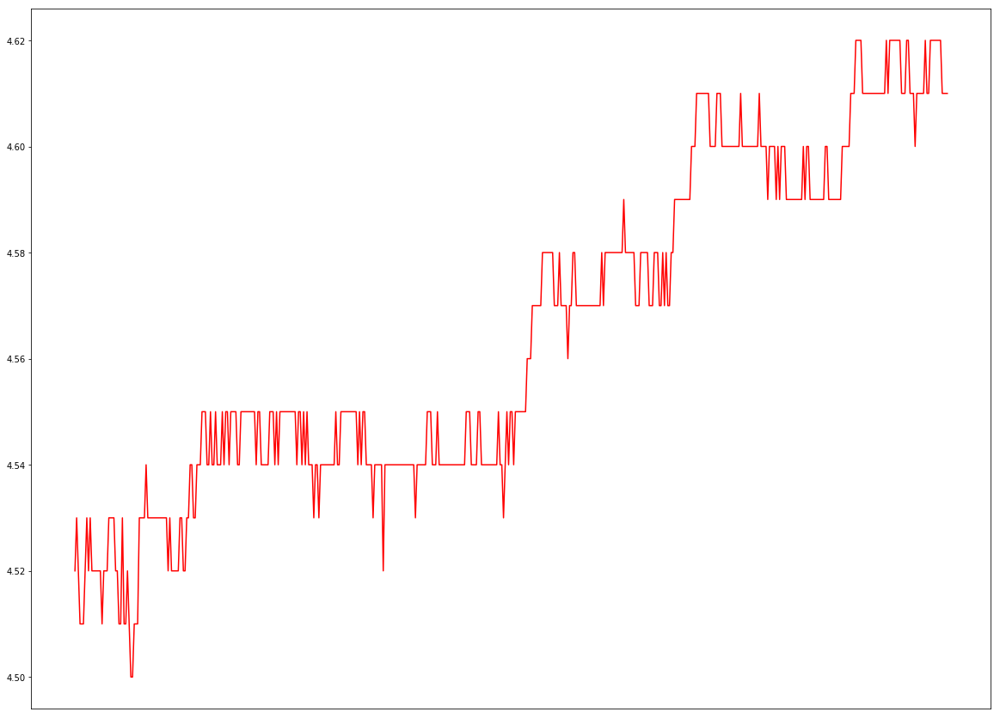

NOTEBOOK
print("hellow world")
hellow world
利用tushare获取股票信息
TuShare是一个免费、开源的python财经数据接口包。
import tushare as ts
d = ts.get_tick_data('600223',date='2017-06-26')
print(d)
time price change volume amount type
0 15:00:00 4.61 -- 0 0 中性盘
1 15:00:00 4.61 -- 0 0 中性盘
2 14:59:41 4.61 -- 0 0 买盘
3 14:59:31 4.61 -- 59 27199 买盘
4 14:59:16 4.61 -0.01 770 354970 卖盘
5 14:59:10 4.62 -- 3 1386 买盘
6 14:59:07 4.62 -- 95 43890 买盘
7 14:58:43 4.62 -- 414 191646 卖盘
8 14:58:34 4.62 -- 95 43890 卖盘
9 14:58:16 4.62 -- 456 210755 买盘
10 14:58:04 4.62 -- 1 462 买盘
11 14:56:52 4.62 0.01 5 2310 买盘
12 14:56:38 4.61 -- 16 7376 卖盘
13 14:56:17 4.61 -0.01 50 23050 卖盘
14 14:56:08 4.62 0.01 1 462 买盘
15 14:56:02 4.61 -- 22 10142 卖盘
16 14:55:41 4.61 -- 139 64079 买盘
17 14:55:30 4.61 -- 40 18440 买盘
18 14:55:11 4.61 -- 1 461 买盘
19 14:54:56 4.61 0.01 25 11525 买盘
20 14:54:29 4.60 -0.01 52 23919 卖盘
21 14:53:41 4.61 -- 7 3227 买盘
22 14:51:32 4.61 -- 108 49788 买盘
23 14:51:08 4.61 -0.01 242 111562 卖盘
24 14:50:02 4.62 -- 6 2772 买盘
25 14:49:17 4.62 0.01 1 462 买盘
26 14:48:41 4.61 -- 1 461 卖盘
27 14:47:41 4.61 -- 6 2766 卖盘
28 14:47:23 4.61 -0.01 16 7376 卖盘
29 14:46:56 4.62 -- 28 12936 买盘
.. ... ... ... ... ... ...
488 09:36:46 4.51 -0.02 11 4961 卖盘
489 09:36:37 4.53 0.02 142 64326 买盘
490 09:36:28 4.51 -- 0 0 卖盘
491 09:36:10 4.51 -0.01 232 104632 卖盘
492 09:36:01 4.52 -- 1 451 买盘
493 09:35:52 4.52 -0.01 341 154132 卖盘
494 09:35:46 4.53 -- 15 6795 卖盘
495 09:35:40 4.53 -- 7 3171 卖盘
496 09:35:34 4.53 -- 31 14043 卖盘
497 09:35:31 4.53 0.01 776 351528 买盘
498 09:35:16 4.52 -- 176 79551 卖盘
499 09:35:04 4.52 -- 18 8135 卖盘
500 09:34:04 4.52 0.01 40 18080 买盘
501 09:33:22 4.51 -0.01 1 451 卖盘
502 09:32:19 4.52 -- 0 0 中性盘
503 09:32:13 4.52 -- 50 22599 卖盘
504 09:32:10 4.52 -- 51 23051 卖盘
505 09:32:07 4.52 -- 9 4067 卖盘
506 09:32:04 4.52 -- 2 903 卖盘
507 09:32:01 4.52 -0.01 107 48363 卖盘
508 09:31:58 4.53 0.01 19 8607 买盘
509 09:31:49 4.52 -0.01 13 5875 卖盘
510 09:31:37 4.53 0.01 382 173046 买盘
511 09:31:25 4.52 0.01 196 88591 买盘
512 09:30:58 4.51 -- 16 7216 买盘
513 09:30:55 4.51 -- 56 25256 买盘
514 09:30:52 4.51 -0.01 7 3157 卖盘
515 09:30:40 4.52 -0.01 207 93563 卖盘
516 09:30:22 4.53 0.01 5 2265 买盘
517 09:30:04 4.52 4.52 30 13559 买盘
[518 rows x 6 columns]
艰难的画出来第一张图。
%matplotlib inline
%config InlineBackend.close_figures = False
import matplotlib.pyplot as plt
import matplotlib.dates as mdate
import pandas as pd
fig=plt.figure(figsize=(20,15))
ax1=fig.add_subplot(111)
ax1.xaxis.set_major_formatter(mdate.DateFormatter('%H:%M:%S'))
plt.xticks(pd.date_range(d.time.index[0],d.time.index[-1],freq='0.1min'))
plt.plot(d.time,d.price,'-r')
plt.show()

这一张图不是很好，没有去除没有数据的点。
print(d.time[190])
13:04:38